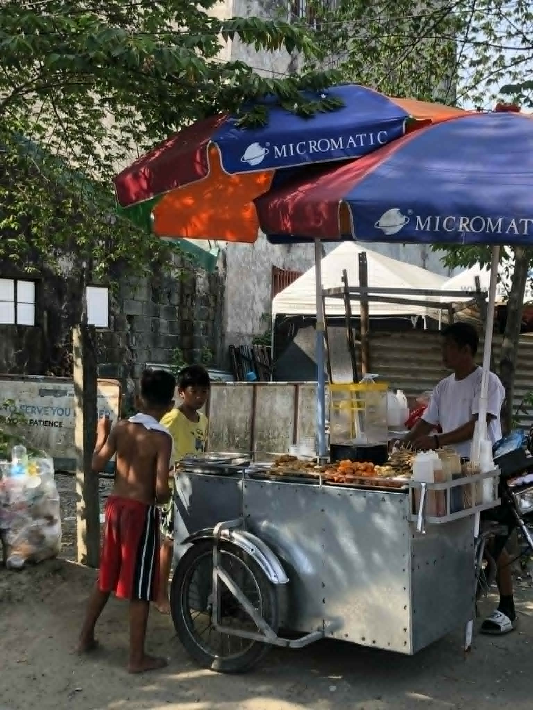
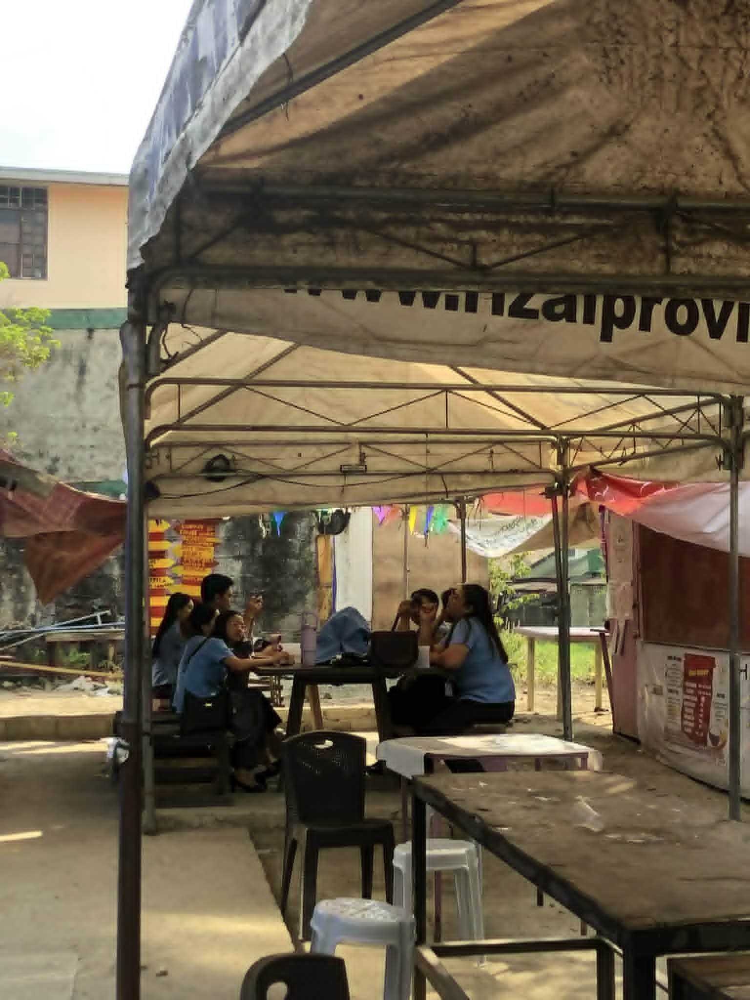
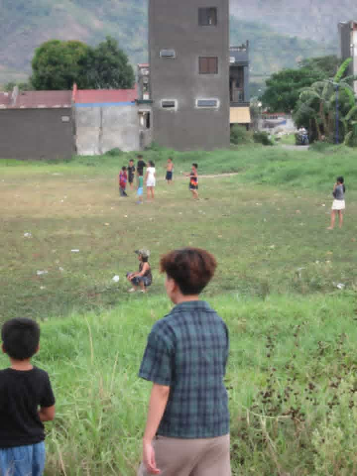
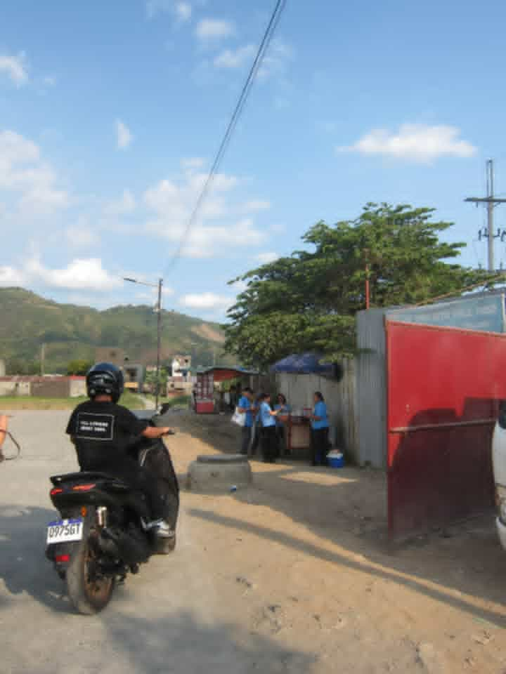

1. What story does your photo tell?
My photo shows a group of kids playing in an open field near their homes. It tells a story about
simple, everyday life in the community, where people enjoy spending time outdoors. The kids are
just playing freely, which shows how happiness doesn’t always come from big or expensive things,
it can come from simple moments like playing with friends. It also reflects a peaceful and natural
environment where people are connected to each other and their surroundings.
2. Why did you choose this subject?
I chose this subject because candid photos feel more real and meaningful compared to posed
ones. The kids weren’t aware they were being photographed, so their actions and expressions
were natural. I like how it captures genuine emotions and a real-life moment. It also represents
daily life in a way that people can easily relate to, especially in communities where outdoor play is
common.
3. What elements make your photo effective?
The natural lighting helps make the photo look soft and realistic, which fits the candid style. The
composition is balanced, with the kids placed in the foreground while the background, like the
houses and greenery, adds context without being too distracting. The timing was important
because I captured them while they were actively playing, which makes the image feel more alive
and dynamic. The emotions in the photo are also strong because you can sense the joy, freedom,
and carefree feeling of the kids, even without seeing close-up facial expressions.
4. What challenges did you encounter?
One of the main challenges was capturing the moment quickly since the kids were constantly
moving. It was also difficult to find the right angle and framing without getting too close and
making them notice me, which could have ruined the candid effect. Another challenge was
making sure the photo wasn’t blurry while trying to take it at the right moment.
5. How can you improve your shot next time?
Next time, I can improve by trying different angles, like getting lower or closer, to make the
perspective more interesting. I can also focus more on framing the subject using techniques like
the rule of thirds. Adjusting camera settings, like shutter speed, could help capture movement
more clearly. Lastly, I can be more patient and wait for an even better moment to make the photo
stronger in terms of storytelling.


